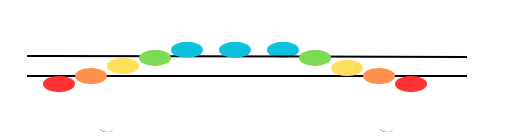
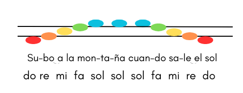
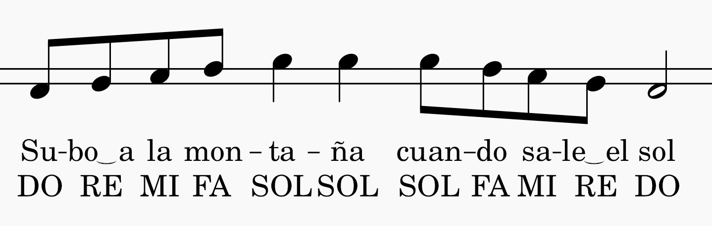

Desarrolla habilidades musicales aplicando los elementos del lenguaje musical
Codifica y decodifica los elementos del lenguaje musical
Comencemos escuchando la melodía "subo a la montaña" donde claramente se van sucediendo 5 alturas consecutivas.
Podemos también representar este fragmento gráficamente, siguiendo la propuesta de una secuencia escalonada y asignándole un color a cada altura. También nos acompañaremos de lo gestual y el movimiento a través de las manos para seguir la melodía (partiendo de un gesto con la mano abajo, a la altura del ombligo para el color rojo y siguiendo hacia arriba con el resto de los colores). Recuerda que ahora estamos trabajando con 5 alturas diferentes.
La representación gráfica nos quedaría de esta forma:

Vamos a escuchar ahora la melodía con la letra de la canción. Como pudiste percibir auditivamente y observar en la representación visual, realiza al comienzo un movimiento ascendente, con las 5 alturas consecutivamente, y luego un movimiento descendente. Prueba cantar la canción y tocarla en el piano (5 teclas blancas consecutivas partiendo de Do)
(audio con letra)
En la siguiente imagen vemos la representación gráfica de las alturas, junto a la letra de la canción y el nombre de las notas que corresponde.

También te presentamos la escritura con el código musical.

Escuchemos ahora 2 fragmentos de melodías tradicionales. ¿Puedes identificar las 5 alturas en cada una? Intenta representarlas gráficamente siguiendo la propuesta de la actividad anterior, manteniendo los colores para cada altura de la melodía, teniendo en cuenta que ahora no aparecen de forma consecutiva.